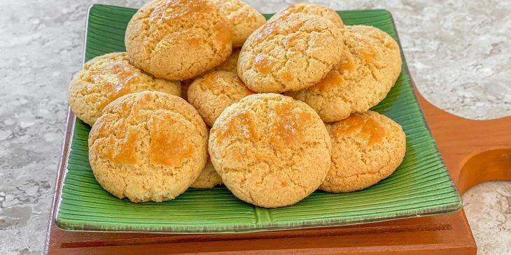

Broa de milho
A broa de milho tem suas origens na culinária portuguesa, onde é conhecida como “broa de milho” ou “pão de milho”. Acredita-se que a receita tenha sido trazida pelos colonizadores portugueses durante o período colonial.
No entanto, ao longo do tempo, a broa de milho foi se adaptando aos ingredientes e técnicas culinárias locais, resultando em variações regionais no Brasil.

Receita:
2 xícaras de chá de fubá mimoso (120 gramas)
2 xícaras de chá de farinha de trigo (240 gramas)
1 xícara de chá de açúcar (160 gramas)
1 colher de sopa de fermento químico em pó (fermento para bolo)
2 ovos médios (em temperatura ambiente)
3 colheres de sopa de manteiga (ou margarina)
3/4 xícara de chá de leite (124 ml)
Modo do preparo
Um recipiente contendo a mistura de fubá, farinha de trigo, açúcar e fermento.
Em um recipiente, coloque o fubá, a farinha de trigo peneirada, o açúcar e o fermento. Misture bem;
Um recipiente contendo a mistura de fubá, farinha de trigo, açúcar, fermento, manteiga e ovos.
Quebre os ovos em um recipiente pequeno, um por vez, e adicione na mistura dos ingredientes secos - caso algum ovo esteja estragado, você não perde a receita inteira. Acrescente a manteiga e vá amassando com as mãos até formar uma farofinha;
Um recipiente contendo uma massa de broa de fubá.
Vá despejando o leite aos poucos e misturando. Quando formar uma massa homogênea e firme, pare de adicionar leite;
Duas formas contendo broas de fubá cruas.
Para modelar a massa, você pode utilizar uma colher de sopa, para retirar uma porção da massa e, com ajuda de outra colher, bolear e transferir para uma forma polvilhada com fubá, ou forrada com papel manteiga, ou untada com manteiga. Leve ao forno preaquecido a 180ºC por cerca de 25 minutos ou até que as broas fiquem firme e douradinhas;
Um prato contendo várias broas de fubá.
Agora é só servir a sua broa com um café e manteiga. Bom apetite!